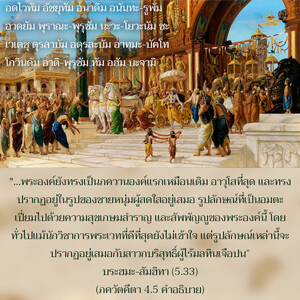

บุคลิกภาพแห่งพระเจ้าตรัสว่า หลายต่อหลายชาติทั้งเธอและข้าได้ผ่านมา ข้าสามารถระลึกได้ทุกๆชาติ แต่เธอจำไม่ได้ โอ้ ผู้กำราบศัตรู

 ผู้สถิตในอวตารต่าง ๆเสมอ เช่น รามะ นริสิมฮะ และในอนุอวตารอีกมากมายเช่นกัน แต่ทรงเป็นภควานองค์เดิมผู้ทรงพระนามว่าคริชณะ และทรงอวตารด้วยพระองค์เองเช่นกัน")

ใน พฺรหฺม-สํหิตา (5.33) เรามีข้อมูลเกี่ยวกับอวตารต่างๆ ขององค์ภควานฺมากมาย ซึ่งได้กล่าวไว้ดังนี้
อัทไวตัม อัจยุตัม อะนาทิม อะนันตะ-รูปัม
อาทยัม ปุราณะ-ปุรุษัม นะวะ-เยาวะนัม จะ
เวเทษุ ทุรละภัม อะทุรละภัม อาตมะ-ภักเตา
โควินทัม อาทิ-ปุรุษัม ตัม อะหัม ภะชามิ
“ข้าขอบูชาบุคลิกภาพสูงสุดแห่งพระเจ้า โควินฺท (กฺฤษฺณ) ผู้ทรงเป็นบุคคลแรกที่มีความสมบูรณ์บริบูรณ์ ไม่มีข้อผิดพลาด ไม่มีจุดเริ่มต้น แม้ว่าทรงอวตารมาในรูปลักษณ์ไม่มีที่สิ้นสุด พระองค์ยังทรงเป็น ภควานฺ องค์แรกเหมือนเดิม อาวุโสที่สุด และทรงปรากฏอยู่ในรูปของชายหนุ่มผู้สดใสอยู่เสมอ รูปลักษณ์ที่เป็นอมตะ เปี่ยมไปด้วยความสุขเกษมสำราญ และสัพพัญญูของพระองค์นี้ แม้นักวิชาการพระเวทที่ดีที่สุดโดยทั่วไปยังไม่เข้าใจ แต่รูปลักษณ์เหล่านี้จะปรากฏอยู่เสมอกับสาวกบริสุทธิ์ ผู้ไร้มลทิน”
ได้กล่าวไว้ใน พฺรหฺม-สํหิตา (5.39) อีกเช่นกันว่า
รามาทิ-มูรติษุ กะลา-นิยะเมนะ ติษฐัน
นานาวะตารัม อะกะโรท ภุวะเนษุ กินตุ
กฤษณะห์ สวะยัม สะมะภะวัต ปะระมะห์ ปุมาน โย
โควินทัม อาทิ-ปุรุษัม ตัม อะหัม ภะชามิ
“ข้าขอบูชาบุคลิกภาพสูงสุดแห่งพระเจ้า โควินฺท (กฺฤษฺณ) ผู้ที่สถิตในอวตารต่างๆ อยู่เสมอ เช่น ราม นฺฤสึห และในอนุอวตารอีกมากมายด้วยเช่นกัน แต่ทรงเป็นภควานฺองค์เดิมผู้ทรงพระนามว่า กฺฤษฺณ และทรงอวตารด้วยพระองค์เองเช่นกัน”
ในคัมภีร์พระเวทได้กล่าวไว้เช่นกันว่า องค์ภควานฺแม้ทรงเป็นหนึ่งไม่มีสองก็ยังทรงปรากฏพระวรกายในรูปลักษณ์ต่างๆ มากมาย เหมือนกับมณี ไวทูรฺย ซึ่งเปลี่ยนสี แต่ยังคงเป็นหนึ่ง รูปลักษณ์อันหลากหลายทั้งหมดขององค์ภควานฺนั้น สาวกบริสุทธิ์ผู้ไร้มลทินจึงจะเข้าใจ ไม่ใช่เพียงแต่ศึกษาคัมภีร์พระเวท (เวเทษุ ทุรฺลภมฺ อทุรฺลภมฺ อาตฺม-ภกฺเตา) สาวกเช่น อรฺชุน ทรงเป็นสหายสนิทขององค์ภควานฺเสมอ เมื่อใดที่องค์ภควานฺทรงอวตารมาเหล่าสาวกก็จะอวตารมาร่วมด้วยเช่นเดียวกัน เพื่อรับใช้พระองค์ในขีดความสามารถของตนที่แตกต่างกันไป อรฺชุน ทรงเป็นหนึ่งในจำนวนสาวกเหล่านี้ ในโศลกนี้เราเข้าใจได้ว่าหลายล้านปีมาแล้วเมื่อองค์ศฺรีกฺฤษฺณตรัส ภควัท-คีตา แก่สุริยเทพ วิวสฺวานฺ และ อรฺชุน ในขีดความสามารถที่แตกต่างกันก็ทรงปรากฏลงมา ข้อแตกต่างระหว่างองค์ภควานฺและ อรฺชุน คือ องค์ภควานฺทรงจำเหตุการณ์ได้ ในขณะที่ อรฺชุน ทรงจำไม่ได้ นี่คือข้อแตกต่างระหว่างสิ่งมีชีวิตผู้เป็นละอองอณู และองค์ภควานฺ แม้ อรฺชุน จะทรงได้รับการยกย่อง ณ ที่นี้ว่าเป็นวีรบุรุษผู้ยิ่งใหญ่ที่สามารถกำราบศัตรูได้ แต่ไม่สามารถเรียกความจำกับสิ่งที่เกิดขึ้นในชาติก่อนให้กลับคืนมาได้ ฉะนั้น สิ่งมีชีวิตไม่ว่าจะยิ่งใหญ่แค่ไหนในการประเมินค่าทางวัตถุจะไม่มีวันเทียบเท่าองค์ภควานฺได้ ผู้ใดเป็นสหายสนิทขององค์ภควานฺนั้นแน่นอนว่าเป็นบุคคลผู้หลุดพ้นแล้ว แต่ถึงอย่างไรก็ไม่สามารถเทียบเท่ากับองค์ภควานฺได้ พฺรหฺม-สํหิตา ได้อธิบายถึงองค์ภควานฺว่าทรงเป็นผู้ที่ไม่มีความผิดพลาด (อจฺยุต) หมายความว่า ทรงไม่เคยลืมพระองค์เองแม้จะมาสัมผัสกับวัตถุ ดังนั้น องค์ภควานฺ และสิ่งมีชีวิตจะไม่มีวันเทียบเท่ากันได้ไม่ว่าในกรณีใด แม้กระทั่งสิ่งมีชีวิตที่หลุดพ้นแล้วเหมือนกับ อรฺชุน แม้ อรฺชุนทรงเป็นสาวกขององค์ภควานฺ บางครั้งทรงลืมธรรมชาติขององค์ภควานฺ แต่ด้วยพระกรุณาธิคุณของพระองค์ สาวกสามารถเข้าใจสภาวะที่ไม่มีข้อผิดพลาดขององค์ภควานฺได้ทันที ในขณะที่ผู้ไม่ใช่สาวกหรือมารจะไม่สามารถเข้าใจธรรมชาติทิพย์นี้ ฉะนั้น คำอธิบายใน คีตา เหล่านี้สมองของมารจะไม่สามารถเข้าใจได้ องค์ศฺรีกฺฤษฺณทรงจำสิ่งที่กระทำเมื่อล้านๆ ปีก่อนหน้านี้ แต่ อรฺชุน ทรงไม่สามารถจำได้ ถึงแม้ว่าทั้งองค์กฺฤษฺณและ อรฺชุน ทรงเป็นอมตะโดยธรรมชาติ เราอาจพิจารณา ณ ที่นี้ว่าสิ่งมีชีวิตลืมทุกสิ่งทุกอย่างเนื่องมาจากการเปลี่ยนร่างกาย แต่องค์ภควานฺทรงจำได้เพราะทรงไม่ได้มีเปลี่ยนร่าง สจฺ-จิทฺ-อานนฺท ของพรองค์ อไทฺวต หมายความว่า ไม่มีข้อแตกต่างระหว่างพระวรกาย และวิญญาณของพระองค์ ทุกสิ่งทุกอย่างที่สัมพันธ์กับพระองค์เป็นทิพย์ ในขณะที่พันธวิญญาณแตกต่างจากร่างวัตถุของตน และเนื่องจากร่างขององค์ภควานฺและดวงวิญญาณเหมือนกัน สภาวะขององค์ภควานฺจึงทรงแตกต่างจากสิ่งมีชีวิตโดยทั่วไปเสมอ แม้ในขณะที่พระองค์เสด็จมาในระดับวัตถุ พวกมารไม่สามารถปรับตนเองให้เข้ากับธรรมชาติทิพย์ขององค์ภควานฺได้ ซึ่งพระองค์จะทรงอธิบายในโศลกต่อไป